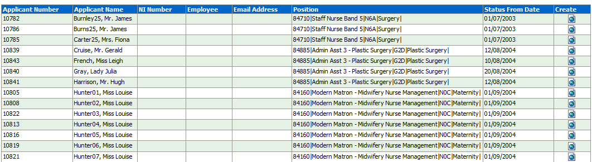
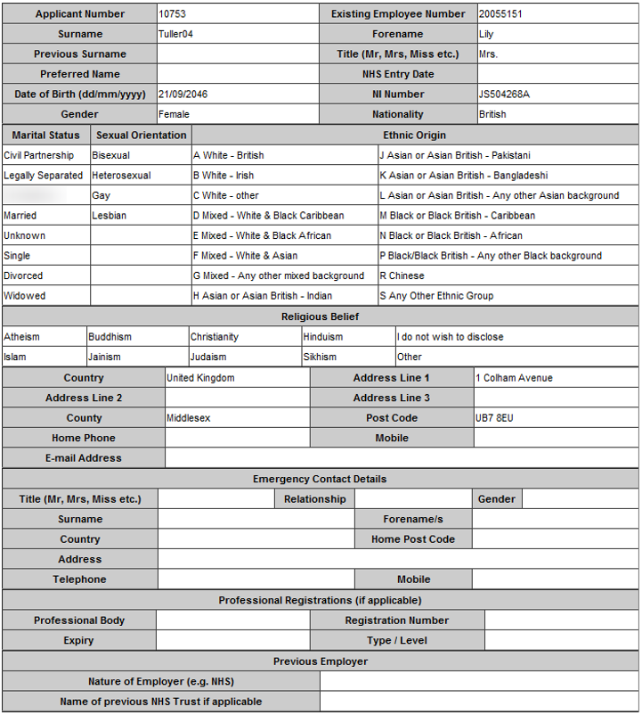
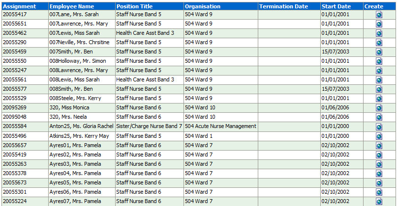
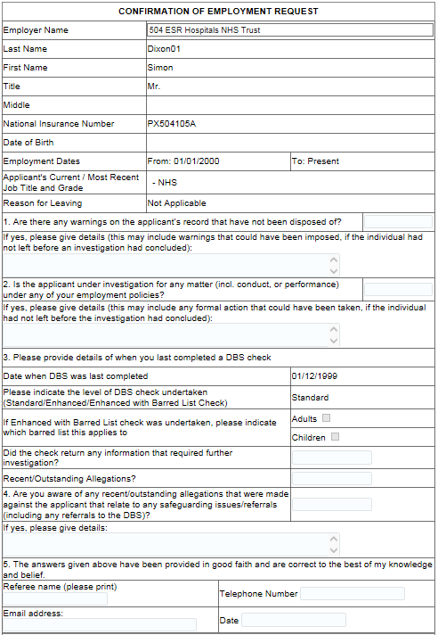
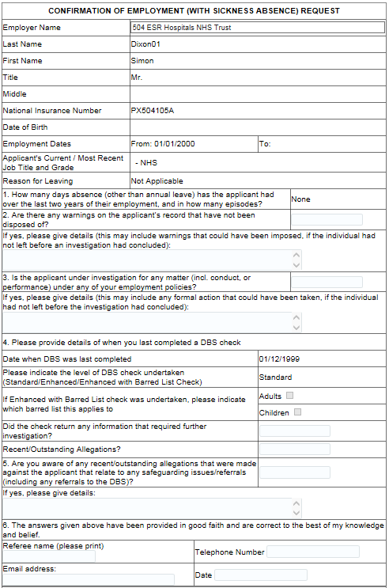
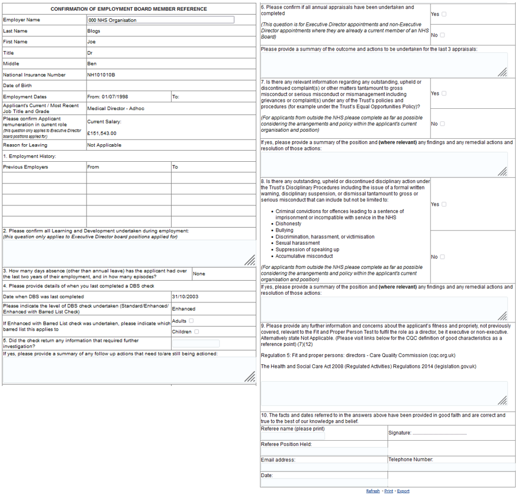

HR Forms Dashboard
Description
This dashboard is designed to provide users with a range of pre-populated standard HR Forms such as a New Hire or Standard Reference form. Depending on the type of form, either applicant or employee data is populated, with users being able to produce a printable version of each of the forms.
Allocation
This dashboard is available to the following URPs:
XXX BI Administration
XXX HR Management
XXX HR Administration
XXX HR Administration (With RA)
Summary Tab
Action Links
New Hire Form>Navigate to Applicant List Page
Standard References>Navigate to Employee List Page
Board Member Reference Form>Navigate to Board Member List Page
Applicant Tab
Applicant List
Description
This analysis provides a list of applicants based on the range of dashboard prompts (including Effective Date and Applicant Status Start Date) provided. Users are then able to click on a specific applicant and produce a New Hire form for the Applicant. Alternatively users are able to produce a Basic Hire Form for all returned Applicants.
Data Items
| Applicant Number | Applicant Name |
|---|---|
| NI Number | Employee Number |
| Email Address | Position |
| Status From Date | Create |
Prompts
Effective Date (Default: Current Date)
Applicant Status Start Date
Status
Position
Vacancy
Hiring Manager
Recruiter
Organisation
Applicant Number
Action Links
Create>Hire Form – Users have the option of creating a Basic Hire form which will return quicker but contains fewer items of data or creating a Hire Form which contains a greater data set.
Example Screenshot

Hire Form
Description
The Hire Form is designed using HTML and below is a list of the fields included within the form. Some fields are excluded from the Basic Hire Form which can be used for increased performance.
Please note that information on the following fields will not be included in this form: Date of Birth Verified, Gender, Ethnic Group, Religious Belief and Marital Status. This is due to an issue currently being investigated and when a solution is found the data will be restored to the form.
Data Items
| Applicant Number | Applicant Employee Number |
|---|---|
| Applicant Title | Applicant First Name |
| Applicant Last Name | Applicant Previous Last Name |
| Applicant Email Address | Applicant Mobile Phone Number |
| NI Number | Applicant Recruitment Source |
| Applicant NHS Org Recruitment Source | Applicant NHS Entry Date |
| Applicant DOB | Applicant Nationality |
| Applicant Marital Status | Applicant Home Phone |
| Applicant Preferred Name | Applicant DOB Verified |
| Applicant Gender | Applicant Ethnic Group |
| Applicant Religion | Applicant Address (Line 1, 2, 3) |
| Applicant Address City | Applicant Address Region |
| Applicant Address Postal Code | Applicant Address Country |
| Applicant Latest Hire Date | Position |
| Position Title | Area of Work |
| Pay Grade | Pay Grade Description |
| Pay Point | Contract Hours |
| FTE | Assignment Category |
| Fixed Term Temp Contract End Date | Fixed Term Temp Contract Reason |
| Incremental Date | Payroll Name |
| Probation Period Length | Probation Period Length Units |
| Employee Location | Staff Group |
| Organisation | Pay Frequency |
| Professional Registration Membership Body (Not available in Basic Hire Form) | Professional Registration Membership Number (Not available in Basic Hire Form) |
| Expiry Date (Not available in Basic Hire Form) | Visa Type (Not available in Basic Hire Form) |
| Visa Ref Number (Not available in Basic Hire Form) | Visa Issue Date (Not available in Basic Hire Form) |
| Visa Expiry Date (Not available in Basic Hire Form) | DBS Number (Not available in Basic Hire Form) |
| Type of DBS Disclosure (Not available in Basic Hire Form) | Date DBS/CoGS Received (Not available in Basic Hire Form) |
| Last Updated Date | Created Date |
| Prof Reg Registration Status (Not available in Basic Hire Form) | Applicant Status |
Example Screenshot

Employee Tab
Employee List
Description
This analysis provides a list of employees based on the dashboard prompts provided. Users are then able to click on a specific employee and produce a Standard Reference Form for the Employee.
Data Items
| Assignment Number | Employee Name |
|---|---|
| Position | Organisation |
| Termination Date | Start Date |
| Create |
Prompts
Employee Name
Employee Number
National Insurance Number
Effective Date
Action Links
Create>Standard Reference Form
Example Screenshot

Standard Reference Form
Description
The Standard Reference is designed using HTML and below is a list of the fields included within the form.
Prompts
Include NI Number, DOB or Both (Default = NI Only)
Employee Number
Assignment Number
Populate Reason for Leaving?
Define End Date as: Actual Termination Date or Substantive Post End Date (Default = Actual Termination Date)
Data Items
| Employee Last Name | Employee First Name |
|---|---|
| Employee Title | Employee Middle Name |
| NI Number | Employee DOB |
| Employee Latest Start Date | Employee Termination Date |
| Position Title | Pay Level Name |
| Date DBS/CoGS Received | Type of DBS Disclosure |
| Childrens Barred List Chk Required | Adult Barred List Chk Required |
Example Screenshot

Standard Reference Form with Sickness
Description
This form is similar to the Standard Reference Form but also includes sickness absence for the previous two years. Below is a list of the fields included within the form.
Prompts
Include NI Number, DOB or Both (Default = NI Only)
Employee Number
Assignment Number
Populate Reason for Leaving?
Define End Date as: Actual Termination Date or Substantive Post End Date (Default = Actual Termination Date)
Data Items
| Employee Last Name | Employee First Name |
|---|---|
| Employee Title | Employee Middle Name |
| NI Number | Employee DOB |
| Employee Latest Start Date | Employee Termination Date |
| Position Title | Pay Level Name |
| Date DBS/CoGS Received | Type of DBS Disclosure |
| Childrens Barred List Chk Required | Adult Barred List Chk Required |
| Absence Days | # Absence Occurrences |
Example Screenshot

Board Member Tab
Board Member List
Description
This analysis provides a list of board member employees based on the dashboard prompts provided. Users are then able to click on a specific employee and produce a Board Member Reference Form for the Employee.
Data Items
| Assignment Number | Employee Name |
|---|---|
| Position | Organisation |
| Termination Date | Start Date |
| Create |
Prompts
Employee Name
Employee Number
Job Role
Effective Date
Action Links
Create> Board Member Reference Form
Example Screenshot
Board Member Reference Form
Description
The Board Member Reference Form is designed using HTML and below is a list of the fields included within the form.
Prompts
Include NI Number, DOB or Both (Default = NI Only)
Employee Number
Assignment Number
Populate Reason for Leaving?
Define End Date as: Actual Termination Date or Substantive Post End Date (Default = Actual Termination Date)
Data Items
| Employee Last Name | Employee First Name |
|---|---|
| Employee Title | Employee Middle Name |
| NI Number | Employee DOB |
| Employee Latest Start Date | Employee Termination Date |
| Position Title | Pay Level Name |
| Date DBS/CoGS Received | Type of DBS Disclosure |
| Childrens Barred List Chk Required | Adult Barred List Chk Required |
| Actual Salary | Previous Employer Names |
| Previous Start Dates | Previous End Dates |
Example Screenshot
